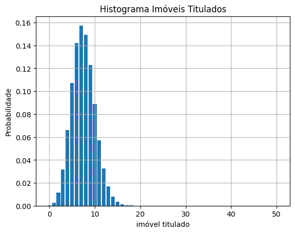

Uma distribuição de probabilidade descreve o comportamento de variáveis aleatórias, indicando as probabilidades associadas aos seus possíveis resultados. Os modelos matemáticos utilizados para representar o comportamento das variáveis dependem do tipo de variável analisada. Por exemplo, a distribuição binomial é utilizada para representar variáveis discretas, enquanto a distribuição normal é aplicada para variáveis contínuas. A seguir, são apresentados esses modelos, bem como exemplos de aplicação.
#Distribuição Binomial
A distribuição binomial é aplicada em casos de experimentos repetidos, nos quais cada tentativa possui apenas dois possíveis resultados, como cara ou coroa, sucesso ou fracasso, imóveis titulados ou não titulados, e etc.
Levando em consideração que:
n = número de tentativas
p = probabilidade de sucesso em cada tentativa
(1-p) = probabilidade de falha em cada tentativa
X = Número de sucessos em n tentativas independentes
É utilizada a seguinte função massa de probabilidade:
Em um levantamento cadastral realizado em imóveis localizados em um núcleo urbano informal no município do interior da Bahia, sabe-se que a probabilidade de um imóvel possuir titulação é de 15%. Se forem selecionado aleatoriamente 50 imóveis, qual é a probabilidade de que nenhum imóvel tenha titulação formal? Pelo menos 10 imóveis tenha titulação formal?
Visualizar código
from scipy.stats import binom# Definindo os parâmetros da distribuição binomialn =50# Número total de tentativas (imóveis selecionados)p =0.15# Probabilidade de sucesso em cada tentativa (imóvel com titulação)# a) Probabilidade de nenhum imóvel ter titulação (x = 0)prob_nenhum_titulo = binom.pmf(0, n, p)print(f"A probabilidade de nenhuma imóvel ter titulação é: {prob_nenhum_titulo:.4f}")# b) Probabilidade de pelo menos dez imóveis terem titulação (x >= 10)# Podemos calcular isso como 1 - (probabilidade de dar menor ou igual 9)prob_pelo_menos_10_imoveis =1- binom.cdf(9, n, p)print(f"A probabilidade de pelo menos menos dez imóveis terem titulação: {prob_pelo_menos_10_imoveis:.4f}")# Gerando o gráfico da distribuição binomial deste exemplo:import matplotlib.pyplot as pltrv = binom(n, p)resultado = rv.pmf(range(0,51,1))plt.bar(range(0,51,1),resultado)plt.xlabel('imóvel titulado')plt.ylabel('Probabilidade')plt.title('Distribuição binomial dos imóveis titulados')plt.grid(True)plt.show()
A probabilidade de nenhuma imóvel ter titulação é: 0.0003
A probabilidade de pelo menos menos dez imóveis terem titulação: 0.2089

#Distribuição normal
A distribuição normal é um dos modelos mais conhecidos e utilizados na estatística, sendo caracterizada por um curva com o formato de um sino.
Essa distribuição é definida por dois parâmetros: média \(\mu\), e desvio padrão \(\sigma\). Podendo também ser representada pela média \(\mu\) e a variância \(\sigma^2\).
Nessa distribuição, a variável X é contínua e pode assumir qualquer valor real:
$-∞ < x < +∞.
Algumas caracteríticas dessa curva são:
Trata-se de uma curva simétrica, em que a média representa o ponto mais alto da curva;
a média, a mediana e a moda possuem o mesmo valor;
A média pode ser um valor positivo, zero ou negativo;
O desvio padrão indica o nível de achatamanento da curva.Quanto maior o desvio padrão, maior a variabilidade e mais achatada é a curva.
As probabilidades de uma variável são dadas pela área sob a curva, que tem área total igual a 1.
Assim, é possível calcular a proporção de área sob a curva para dois valores específicos, o que representa a probabilidade de a variável assumir valores dentro desse intervalo.
Em uma distribuição Normal, aproximadamente 68,3% dos valores estão a até um desvio padrão da média, 95,5% estão a até dois desvios padrão e 99,7% estão a até três desvios padrão, conforme tabela abaixo:
Tamanho
Proporção
\(\mu \pm 1\sigma\)
68.3%
\(\mu \pm 2\sigma\)
95.5%
\(\mu \pm 3\sigma\)
99.7%
A fim de facilitar o cálculo da probabilidade em uma dada distribuição normal, utiliza-se a distribuição normal padronizada, cujos valores de probabilidade são tabelados e que possui \(\mu=0 ~ e ~\sigma^2=1\).
Para padronizar um variável aleatória (X) de uma distribuição normal qualquer N (\(\mu\),\(\sigma^2\)), calcula-se uma nova variável aleatória Z, chamada variável aleatória normal padronizada, dada por:
\[
Z=\frac{X-\mu}{\sigma}
\]
Após calculado o valor de Z, é possível encontrar na tabela de distribuição normal padronizada a área associada a esse valor. Dependendo do tipo de tabela utilizada, essa área pode representar a probabilidade acumulada a esquerda de Z, ou a área entre a média e o valor de Z. A partir dessas informações, é possível obter a área entre dois pontos sob a curva, que representa a probabilidade da variável assumir valores dentro desse intervalo.
Exemplo - Aplicação da distribuição normal:
Em um estudo sobre os imóveis localizados em um determinado núcleo informa objeto da Reurb, foi analisada a diferença entre a área registrada no cartório e a área obtida no levantamento cadastral. Considerando que essas diferenças seguem uma distrobuição normal, com média 5 e desvio padrão 15 m², qual a probabilidade a probabilidade de um imóvel apresentar diferença superior a 20 m² entre a área cadastrada e a área levantada em campo? e a diferença entre as áreas estar entre −10 m² e 10 m².
Visualizar código
from scipy.stats import norm# Definindo os parâmetros da distribuição normalmedia =0# Média da diferença entre as áreas calculadas (em m²)desvio_padrao =15# Desvio padrão diferença entre as áreas calculadas (em m²)# a) Probabilidade da diferença entre as áreas ser superior a 20 m² (P(X > 20))# Usamos a função de sobrevivência (sf)prob_superior_20 = norm.sf(20, media, desvio_padrao)print(f"A probabilidade da diferença entre as áreas ser superior a 20 m² é: {prob_superior_20:.4f}")# b) Probabilidade da diferença entre as áreas estar entre - 10 e 10 m² (P(-10 < X < 10))# Calculamos a cdf em 10 e subtraímos a cdf em -10prob_entre_menos10_e_10 = norm.cdf(10, media, desvio_padrao) - (norm.cdf(-10, media, desvio_padrao))print(f"A probabilidade da diferença entre as áreas estar entre -10 e 10 m² é: {prob_entre_menos10_e_10:.4f}")
A probabilidade da diferença entre as áreas ser superior a 20 m² é: 0.0912
A probabilidade da diferença entre as áreas estar entre -10 e 10 m² é: 0.4950